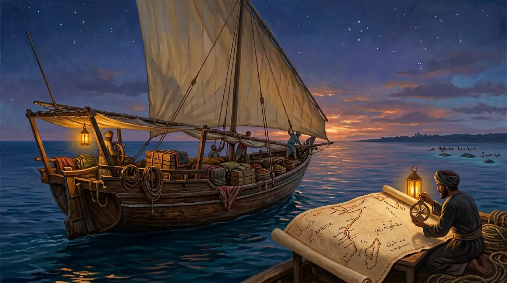
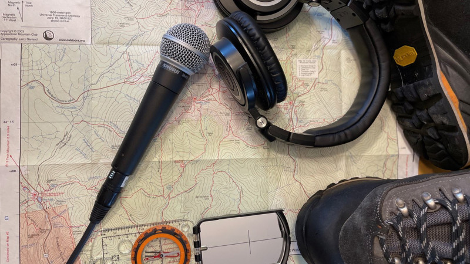

بوّابات الاكتشاف
اختر بداية رحلتك
ثماني بوّابات… يجمعها شغف المعرفة
٠١
الفكرة والرسالة
عن الموقع
من صفحات الموسوعة… تبدأ الحكاية
تعرّف على الموقع ↖٠٣
الشخصيات والأثر
سير من ذاكرة الوطن
سيرٌ تحفظ الحكاية وتروي الأثر
اكتشف المسار ↖
٠٦الجغرافيا والاكتشاف
أثر على الخريطة
نتتبّع المكان… لنقرأ الحكاية
اكتشف المسار ↖
٠٧التحدّي والبرهان
مضمار الباحث
تتبّع الدليل… واستحقّ السبق
اكتشف المسار ↖٢٢٬٤٨٩مشاهدة للموقع
٤٩١مشاركًا في المسابقات
لكلّ معرفةٍ أثر… ولكلّ باحثٍ رحلة
اقرأ المصدر، وتتبّع الدليل، واصنع فهمك.